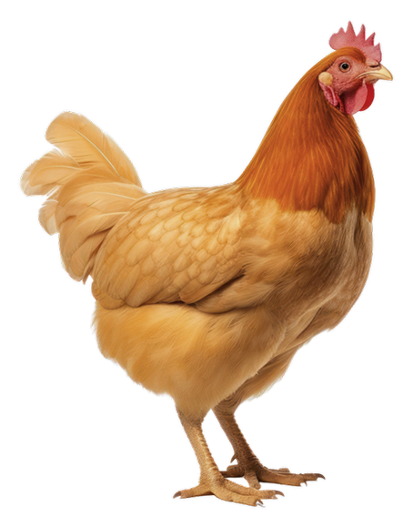
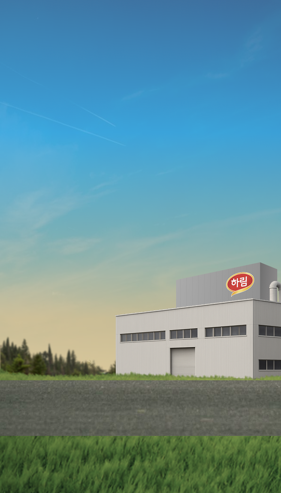

신선함의 비밀을 엿보다
-
진짜 맛있 닭고기의 비밀이
무엇인지 알고 계신가요? -
정답은 바로
신선함 입니다.
하지만 진짜 신선함은 무엇일까요?
1978년부터 45년 간 오직 ‘신선함'
하나만을 위해 지켜온 하림만의
놀라운 비밀을 발견해 보세!
Let's Begin the Journey
-
HANDS
ON TOUR -
손 끝으로 발견하는
진짜 신선함의 비밀

Unlock the Secret
-
농장
-
공장1
-
공장2
-
콜드체인
-
집
- STEP 1
-
좋은 닭고기는
건강한 사육에서
시작됩니다.
- STEP 2
-
하림의 기술은 신선함을
위한 여정입니다.
- STEP 3
-
8℃ 가공, 살얼음 포장으로
끝까지 신선하게!

- STEP 4
-
가장 신선할 때에
배송이 시작돼요!